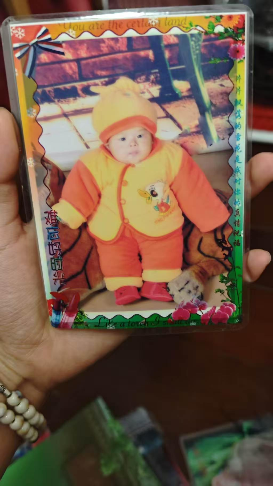
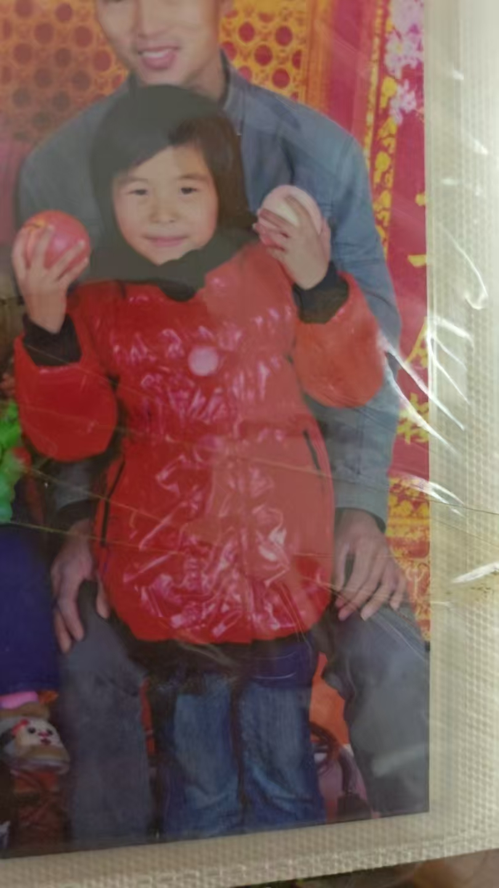
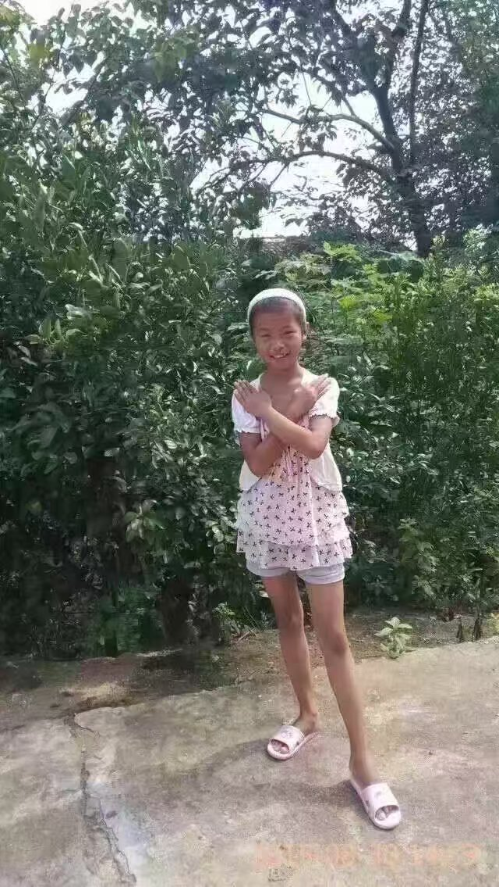
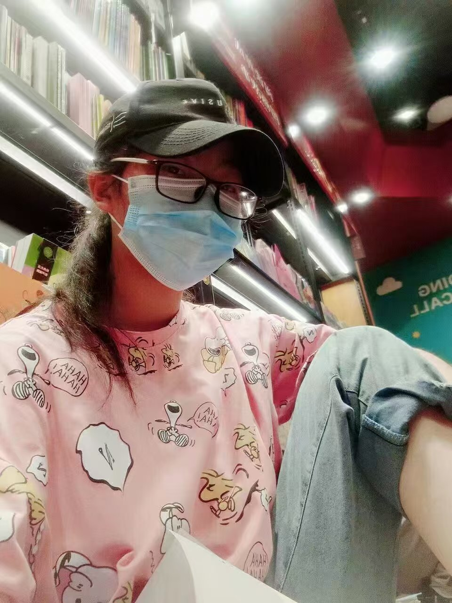
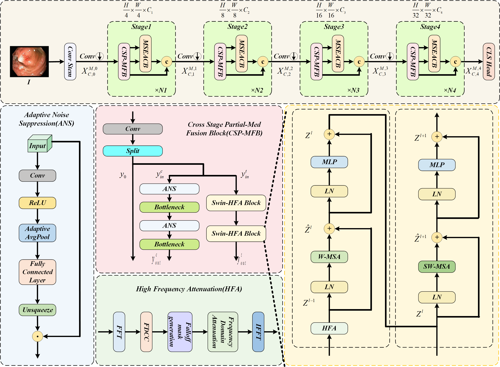
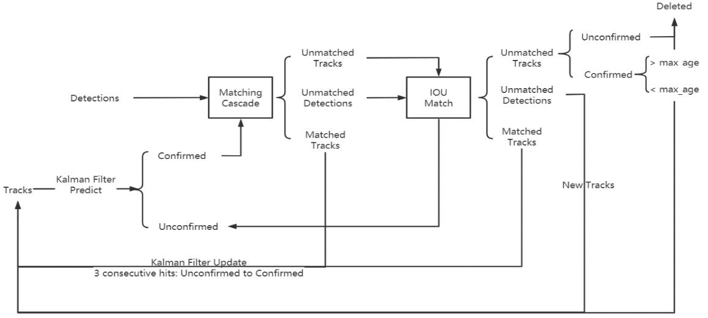

个人简介
一、我是谁
我是一名人工智能与光芯片交叉领域的科研工作者，现为国防科技大学电子科学学院电子信息专业硕士研究生，师从宋兵副教授。
我在苏鹏翔老师、魏勍颋副教授和魏欣副教授的指导下，2025年于南昌大学软件工程学院获得工学学士学位，并以软件工程系综合排名1.3%的身份保研至国防科技大学。我是软件工程2107班的成员。
二、研究兴趣与学术追求
我目前的研究专注于片上光神经网络的设计与优化，致力于推动人工智能与光芯片技术的融合发展。我的研究兴趣包括但不限于以下几个方向：
- 片上光神经网络架构设计：探索高效的光神经网络结构，以提升计算性能和能效。
- 光神经网络的训练与量化：研究适用于光神经网络的训练和量化算法，推进光神经网络的训练和部署。
- 光芯片技术在人工智能中的创新应用：如图像识别、自然语言处理等。
同时我的研究还聚焦于光纤水声探测领域，探究水声信号处理和光学相变干涉信号调制解调算法，结合深度学习、计算机视觉、信号处理、数学、物理、工程等学科知识，为水声探测领域提供新的思路。
三、个人发展理念
我热爱技术，喜欢尝试各种新鲜事物。相较于成为行业专家，我更希望成为一个技术通才，能够在多个领域进行跨界研究和创新。我相信，只有不断学习和探索未知，才能不被AI替代，保持自己的核心竞争力。
四、个人性格
关于我这个人：情绪稳定、通情达理、讲原则、喜欢先独立思考后再与人交流。
由于是程序员出身，我更擅长独立思考解决问题，但多个团队比赛和社团活动经历也让我非常重视团队合作和交流。我喜欢自由探索，喜欢尝试新技术，喜欢在不受限制的环境中发挥创造力，这也是我为什么选择继续读研的原因之一。我相信，只有在一个开放和包容的环境中，才能激发出最好的创新和成果。
五、写在最后
欢迎对我的研究感兴趣的同学和学者联系我，期待与志同道合的伙伴一起探索学术前沿。
欢迎扫码添加微信交流
个人风采




可左右滑动或点击按钮浏览
新闻动态
- 2025年12月： 发明专利 "一种图像分类方法及相关装置、设备、存储介质" 被授权！
- 2025年11月： 论文 "Edge-guided Multi-scale Attention Fusion Network for Gastrointestinal Tumor Image Classification" 被 Alexandria Engineering Journal 录用！
- 2025年6月： 国家级大创 "基于多模态特征学习的 MRI 影像阿尔茨海默症病灶分割方法研究" 顺利结题！
- 2025年6月： 国家级大创 "基于深度神经网络的脑电情绪识别与应用" 顺利结题！
- 2025年4月： 软著 "阿尔兹海默智能诊断平台V1.0" 被授权！
- 2024年6月： 发明专利 "一种基于全局-局部特征的行人检测方法" 被授权！
- 2024年5月： 软件著作 "人体运动数据测试平台 V1.0" 被授权！
- 2024年4月： 论文 "Global-to-Local Modeling for Pedestrian Detection" 被 journal of intelligent & fuzzy systems 录用！
- 2024年4月： 论文 "Design and Implementation of Pedestrian Target Tracking System Based on YOLO Architecture" 被 AIAC 2023 录用！
- 2023年6月： 省部级科研训练项目 "基于深度学习的股票数据分析软件研发" 顺利结题！
发表论文


